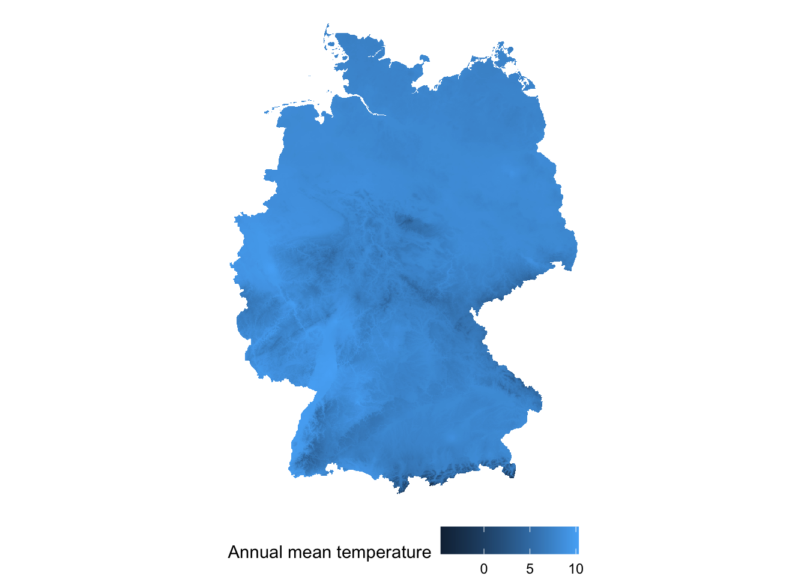
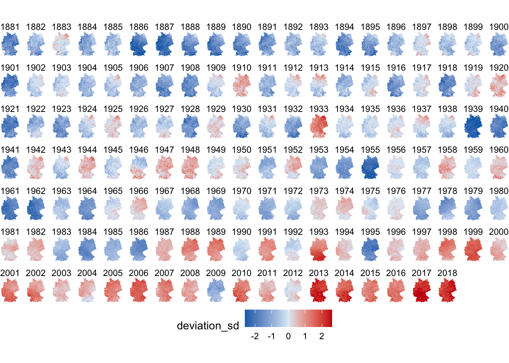
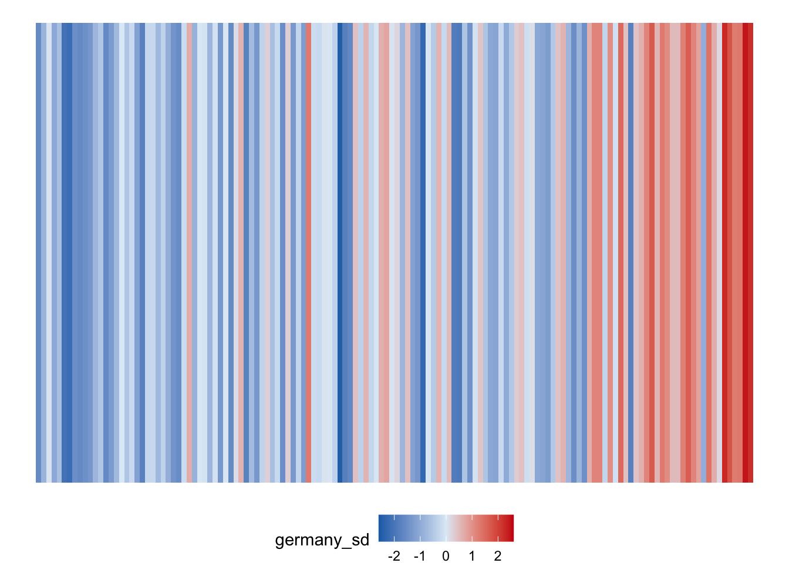

The data is obtained from the DWD. (https://opendata.dwd.de/climate_environment/CDC/grids_germany/annual/air_temperature_mean/)
library(adehabitatMA)## Loading required package: sp## Registered S3 methods overwritten by 'adehabitatMA':
## method from
## print.SpatialPixelsDataFrame sp
## print.SpatialPixels splibrary(tidyverse)
#devtools::install_github("cran/SDMTools")
library(SDMTools)
library(raster)##
## Attaching package: 'raster'## The following object is masked from 'package:SDMTools':
##
## distance## The following object is masked from 'package:adehabitatMA':
##
## buffer## The following object is masked from 'package:patchwork':
##
## area## The following object is masked from 'package:ggpubr':
##
## rotate## The following object is masked from 'package:magrittr':
##
## extract## The following object is masked from 'package:plotly':
##
## select## The following object is masked from 'package:dplyr':
##
## select## The following object is masked from 'package:tidyr':
##
## extractlibrary(scales)
temperature_2000 <-
read.asc.gz(file = "materials/Germany_temperature/grids_germany_annual_air_temp_mean_201017.asc.gz") %>%
raster() %>%
rasterToPoints() %>%
data.frame() %>%
transmute(longitude = x,
latitude = y,
temperature = layer/10)
summary(temperature_2000)## longitude latitude temperature
## Min. :3280915 Min. :5238001 Min. :-4.70
## 1st Qu.:3480915 1st Qu.:5485001 1st Qu.: 7.50
## Median :3594915 Median :5670001 Median : 7.90
## Mean :3596179 Mean :5657995 Mean : 7.85
## 3rd Qu.:3714915 3rd Qu.:5826001 3rd Qu.: 8.30
## Max. :3919915 Max. :6103001 Max. :10.30ggplot(data = temperature_2000) +
geom_raster(aes(x = longitude,
y = latitude,
fill = temperature)) +
theme_void() +
coord_equal() +
labs(fill = "Annual mean temperature") +
theme(legend.position = "bottom") 
temperature_all <-
list.files(path = "materials/Germany_temperature/",pattern = "grids_germany_annual_air_temp_mean", recursive = TRUE,full.names = T) %>%
lapply(function(x) read.asc.gz(x) %>%
raster() %>%
rasterToPoints() %>%
data.frame()) %>%
bind_rows(.id = "year") %>%
transmute(year = as.numeric(year) + 1880,
longitude = x,
latitude = y,
temperature = layer/10)
summary(temperature_all)## year longitude latitude temperature
## Min. :1881 Min. :3280915 Min. :5238001 Min. :-5.60
## 1st Qu.:1915 1st Qu.:3480915 1st Qu.:5485001 1st Qu.: 7.60
## Median :1950 Median :3594915 Median :5670001 Median : 8.40
## Mean :1950 Mean :3596179 Mean :5657995 Mean : 8.38
## 3rd Qu.:1984 3rd Qu.:3714915 3rd Qu.:5826001 3rd Qu.: 9.20
## Max. :2018 Max. :3919915 Max. :6103001 Max. :13.40Here the reference temperature is set by using the mean over the temperature from 1971 to 2000.
reference_temperature <-
temperature_all %>%
filter(year >= 1971 & year <= 2000) %>%
group_by(longitude, latitude) %>%
summarise(reference_temperature = mean(temperature, na.rm = TRUE),
reference_sd = sd(temperature, na.rm = TRUE)) %>%
ungroup()
summary(reference_temperature$reference_temperature)## Min. 1st Qu. Median Mean 3rd Qu. Max.
## -4.02 8.15 8.66 8.58 9.18 11.26deviation_temperature <-
temperature_all %>%
left_join(reference_temperature,
by = c("longitude", "latitude")) %>%
mutate(deviation_mean = temperature - reference_temperature,
deviation_sd = deviation_mean/reference_sd)
summary(deviation_temperature$deviation_sd)## Min. 1st Qu. Median Mean 3rd Qu. Max.
## -4.78 -1.08 -0.27 -0.26 0.50 7.11#plot
ggplot(deviation_temperature) +
geom_raster(aes(x = longitude,
y = latitude,
fill = deviation_sd)) +
facet_wrap(~ year,
nrow = 7) +
scale_fill_gradient2(low = "#176fb6",
mid = "#dfecf7",
high = "#cc1017",
limits = c(-2.6, 2.6),
oob = squish) +
theme_void() +
coord_equal() +
theme(legend.position = "bottom")
germany_warming_stripe <-
deviation_temperature %>%
group_by(year) %>%
summarise(germany_sd = mean(deviation_sd, na.rm = TRUE)) %>%
ungroup() %>%
mutate(dummy = 1)
summary(germany_warming_stripe)## year germany_sd dummy
## Min. :1881 Min. :-2.495 Min. :1
## 1st Qu.:1915 1st Qu.:-1.097 1st Qu.:1
## Median :1950 Median :-0.222 Median :1
## Mean :1950 Mean :-0.262 Mean :1
## 3rd Qu.:1984 3rd Qu.: 0.461 3rd Qu.:1
## Max. :2018 Max. : 2.468 Max. :1ggplot(data = germany_warming_stripe) +
geom_col(aes(x = year,
y = dummy,
fill = germany_sd),
width = 1) +
scale_fill_gradient2(low = "#176fb6",
mid = "#dfecf7",
high = "#cc1017",
limits = c(-2.6, 2.6),
oob = squish) +
theme_void() +
theme(legend.position = "bottom")